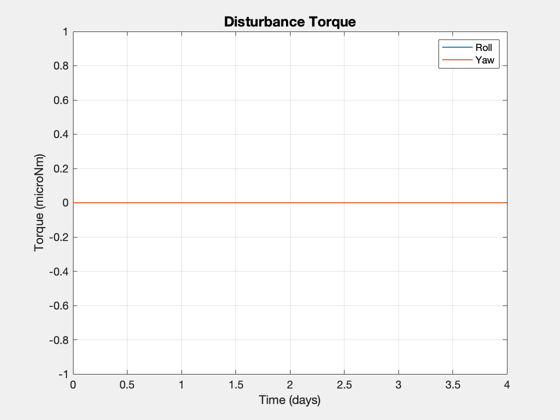
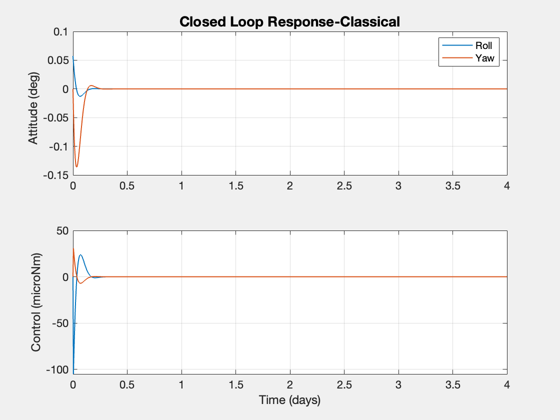
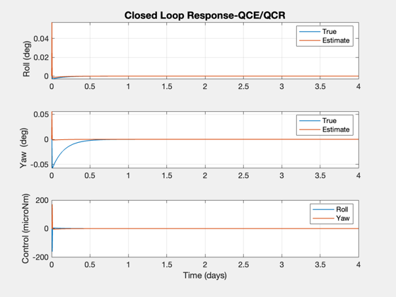
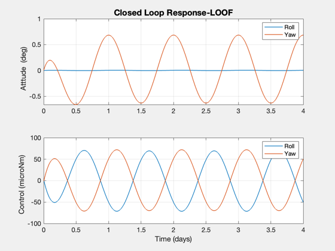

This script explores different roll/yaw controllers.
The plant model is obtained from RYDyn. The controllers are SISO, linear quadratic regulator and estimator, and quadratic controller. The open and closed loop response to a periodic disturbance are plotted. ------------------------------------------------------------------------ See also @statespace/statespace.m, C2DZOH, DQCE, DQCR, LQC, Constant, Plot2D, RYDyn, Geo ------------------------------------------------------------------------
Contents
- Constants
- Plant models
- For simulations
- Body fixed torque and inertially fixed torque
- Open loop plant
- SISO controller
- Closed loop simulation
- Linear quadratic regulator and estimator
- Output feedback
- Control Weights
- State Weighting
- Generate the output feedback controller
- The output feedback system is much higher gain and needs a smaller dT
%------------------------------------------------------------------------------- % Copyright (c) 1999 Princeton Satellite Systems, Inc. % All rights reserved. %-------------------------------------------------------------------------------
Constants
%---------- clear w; degToRad = Constant('deg to rad'); radToDeg = Constant('rad to deg'); secInDay = 86400; wo = Geo; hW = 60; iAxis = [1 3]; inr = diag([1000 200 1000]); hMWA = [0;-1;0]*hW; wO = [0;-1;0]*wo;
Plant models
%-------------
[aP, bP, cP, dP, aL, bL, cL, dL, wP] = RYDyn( inr, hMWA, wO, iAxis);
a = aL;
b = bL;
c = [1 0];
d = [0 0];
For simulations
%----------------
t = linspace(0,4*secInDay,1000);
dT = t(2);
days = t/secInDay;
Body fixed torque and inertially fixed torque
%---------------------------------------------- uD = 0*1e-6*[1 + 50*cos(t*2*pi/secInDay);1 - 50*sin(t*2*pi/secInDay)]; Plot2D(days,1e6*uD ,'Time (days)','Torque (microNm)', 'Disturbance Torque') legend('Roll','Yaw')
Open loop plant
%---------------- [aD, bD] = C2DZOH( a, b, dT ); x = zeros(2,length(t)); for k = 2:length(t) x(:,k) = aD*x(:,k-1) + bD*uD(:,k-1); end Plot2D(days,x*radToDeg ,'Time (days)','Attitude (deg)','Open Loop Response') legend('Roll','Yaw')

SISO controller
Roll measurement only
%---------------- wN = 5*wo; zeta = 0.7071; disp('Classical Gain Matrix') kRY = -[(wo^2-wN^2)/wo;2*zeta*wN]*hW
Classical Gain Matrix
kRY =
0.10501
-0.030938
Closed loop simulation
%----------------------- x = zeros(2,length(t)); x(1) = 0.001; u = zeros(2,length(t)); for k = 2:length(t) y = x(1,k-1); u(:,k) = -kRY*y; x(:,k) = aD*x(:,k-1) + bD*(uD(:,k-1) + u(:,k)); end Plot2D(days,[x*radToDeg;u/1e-6] ,'Time (days)',['Attitude (deg) ';'Control (microNm)'],... 'Closed Loop Response-Classical',[],['[1,2]';'[3,4]']) legend('Roll','Yaw')
Linear quadratic regulator and estimator
%----------------------------------------- h = [1 0]; qE = 100*eye(2); rE = 1; qC = eye(2); rC = eye(2); kE = DQCE( aD, bD, h, qE, rE ); disp('QCR/QCE Gain Matrix') kC = DQCR( aD, bD, eye(2), eye(2) ) x = zeros(2,length(t)); x(1) = 0.001; xE = zeros(2,length(t)); u = zeros(2,length(t)); for k = 2:length(t) y = h*x(:,k-1); u(:,k) = -kC*xE(:,k-1); xE(:,k) = aD*xE(:,k-1) + bD*u(:,k) + kE*(y - [1 0]*xE(:,k-1)); x(:,k) = aD*x(:,k-1) + bD*(uD(:,k-1) + u(:,k)); end [h, hA] = Plot2D(days,[x*radToDeg;xE*radToDeg;u/1e-6] ,'Time (days)',['Roll (deg) ';... 'Yaw (deg) ';'Control (microNm)'], 'Closed Loop Response-QCE/QCR',[],['[1,3]';'[2,4]';'[5,6]']); legend(hA(1).h,'True','Estimate') legend(hA(2).h,'True','Estimate') legend(hA(3).h,'Roll','Yaw')
QCR/QCE Gain Matrix
kC =
-0.0021255 0.1685
-0.1685 -0.0021255
 Output feedback
%---------------- g = statespace( a, b, c, d, 'Roll/Yaw',['Roll','Yaw '],['Roll','Yaw '],'Roll');
Control Weights
%----------------
w.r = rC;
State Weighting
%----------------
w.q = qC;
w.k = kRY;
Generate the output feedback controller
%---------------------------------------- [gC, j] = LQC( g, w, 'lqof' ); fprintf('Output Feedback cost reduction from %12.4e to %12.4e\n\n',j.initial,j.final) disp('Output Feedback Gain Matrix') kC = get( gC, 'd' )
Output Feedback cost reduction from 1.4086e+04 to 6.9167e+03
Output Feedback Gain Matrix
kC =
0.99563
-1.0043
The output feedback system is much higher gain and needs a smaller dT
%---------------------------------------------------------------------- t = linspace(0,4*secInDay,4000); uD = 1e-6*[1 + 50*cos(t*2*pi/secInDay);1 - 50*sin(t*2*pi/secInDay)]; dT = t(2); [aD,bD] = C2DZOH(a,b,dT); x = zeros(2,length(t)); u = zeros(2,length(t)); for k = 2:length(t) y = x(1,k-1); u(:,k) = -kC*y; x(:,k) = aD*x(:,k-1) + bD*(uD(:,k-1) + u(:,k)); end [h, hA] = Plot2D(t/secInDay,[x*radToDeg;u/1e-6] ,'Time (days)',['Atttude (deg) ';'Control (microNm) '],... 'Closed Loop Response-LOOF',[],['[1,2]';'[3,4]']); legend(hA(1).h,'Roll','Yaw') legend(hA(2).h,'Roll','Yaw') %-------------------------------------- % $Date$ % $Id: 5490c25a13fc29351af33415459a4d062c713611 $